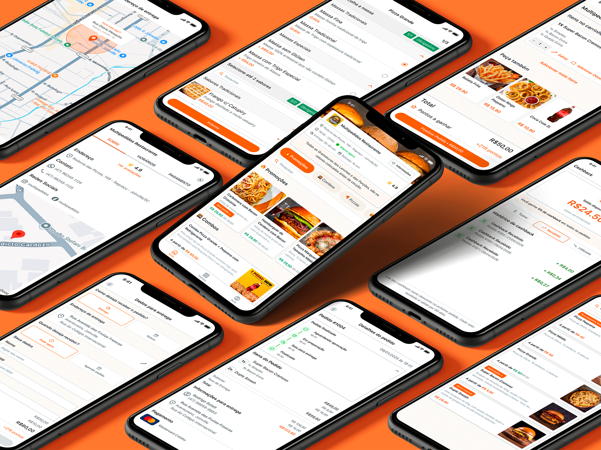
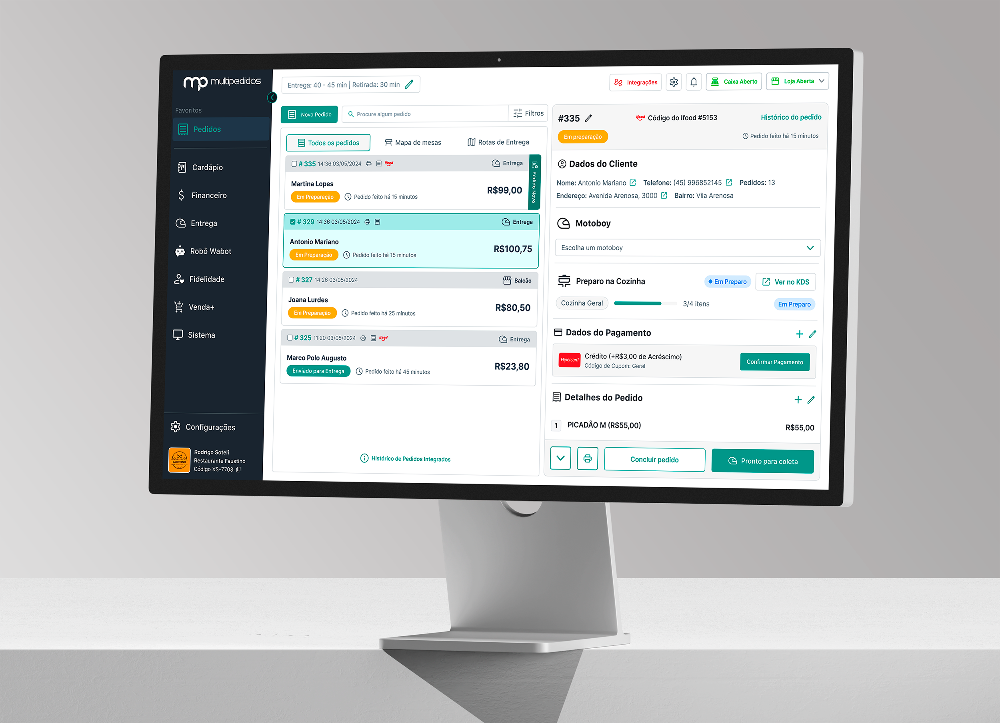
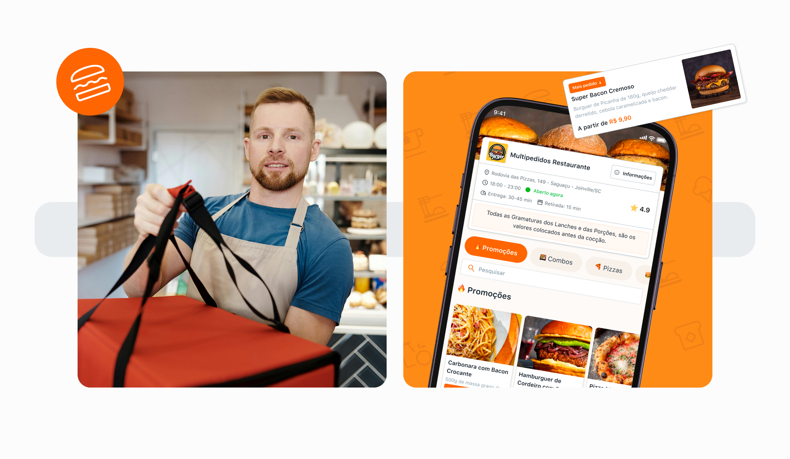
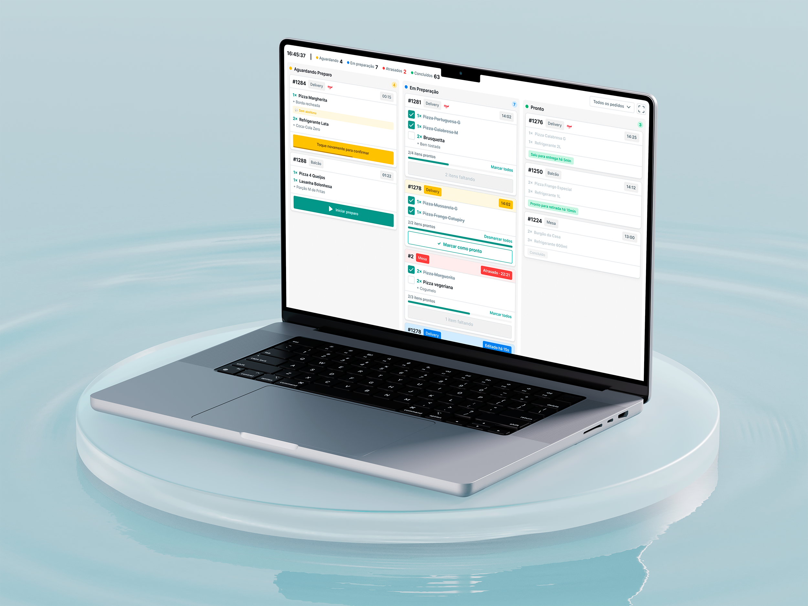

Sole designer across two products, six teams, and 4,000+ restaurant clients. I built the design system, the process, and the culture from scratch while shipping 40+ features without stopping to breathe.

Scale
The Situation
I joined Multipedidos in January 2024 as a freelancer via Estúdio 149, and became a fixed contractor in June 2024. I was the only designer in the company. There was no design system, no design process, no design culture.
The product had two core surfaces: Gestor de Pedidos (a B2B restaurant management SaaS covering order reception, menu management, KDS, PDV, and inventory) and Pedir.Delivery (a consumer-facing online ordering platform). Both needed to scale fast. Both were accumulating design debt with every release.
The Mandate
Build a design system that the engineering team could consume directly. Establish a product design practice that the business could depend on. Ship features without accumulating debt. And eventually, prove that design decisions could be tied to business outcomes.
As the only designer fielding demands from 6 different teams simultaneously, I was responsible for the full design operation: stakeholder alignment, research, components, critiques, A/B tests, and developer handoff. The challenge wasn't scale alone; it was building the infrastructure for good design decisions while keeping pace with an aggressive delivery rhythm.

The challenge wasn't managing design at scale. It was building the infrastructure for good decisions while the product kept shipping.
Design System
The delivery pace was aggressive from day one, so I had to be strategic. I started by building the Foundation: a complete token system covering color, spacing, typography, radius, and elevation. With the tokens in place, we adopted Ant Design as an accelerator, mapping every component to our own token layer. That let the team ship immediately with a consistent base, while I worked in parallel to customize and replace components over time. Because everything was token-driven from the start, every component update propagated across all 1,000+ screens automatically.
The foundation came first: a full token system for color, spacing, radius, typography, and elevation, with dark and light mode from day one. Ant Design provided the component structure; our tokens provided the identity. Any change at the token level propagated everywhere.
Implemented Figma DEV Mode for all developers. Every component in the design system maps to a code reference. Developers inspect, not guess. Implementation fidelity improved significantly from the first sprint we ran it.
Pedir.Delivery is a mobile-first consumer product. Gestor is used across desktop and tablet. Every component in the system was built with both contexts in mind, resulting in 1,000+ screens across mobile and web.

Consumer Platform
Every design decision on Pedir.Delivery pointed at the same business goal: get more customers through to a completed order. That meant owning the full funnel, from the moment a customer opens a restaurant's menu through item selection, customization, cart, checkout, and payment confirmation. No abandoned carts from friction. No lost orders from confusing flows.
Scope
01
Menu
Category browsing, item cards, search, restaurant info
02
Item Selection
Generic items, pizza builder, combo selection, modifiers
03
Cart
Review, quantity edit, loyalty points preview, CTA
04
Checkout
Delivery details, payment method, cashback, coupons
05
Confirmation
Order confirmed, delivery ETA, async payment tracking
Item Flows
Three Ordering Flows in One
The menu had three structurally different item types, each needing its own ordering flow. Generic items: simple selection with optional modifiers. Pizza: size, crust, toppings, and half-and-half configurations with complex validation logic. Combo: step-by-step group selection where each slot has its own set of options. All three had to feel coherent in the same visual system while handling completely different data models.
Conversion
Reducing Abandonment at Every Step
The ordering flow was redesigned with drop-off reduction as the explicit brief. Loyalty points earned were shown at cart level before checkout, reinforcing value before commitment. Item customization used progressive disclosure so customers only saw mandatory choices first. The cart-to-checkout transition was a single CTA with price confirmation inline, removing the friction of a separate summary step.
Account & Loyalty
Login, Account, and Fidelidade
Owned the full account management flows: login, account creation, and password recovery. Also designed the Fidelidade (loyalty) system interface, including point balance, redemption rules, and earnings shown throughout the ordering flow. Making points visible at every step gave customers a reason to complete rather than abandon.
Transactional Flows
The checkout and payment experience is where the order either completes or dies. I owned the complete transactional layer: delivery details, payment selection, discount application, order confirmation, and async payment tracking. The scope covered six payment methods across two contexts, a cashback system, coupon codes, three delivery modes, and A/B tests running directly on the live flow.
Cart
Review
Delivery
Details
Payment
Selection
Discounts
& Cashback
Order
Confirmed
Payment
Tracking
Pay Online
Pay on Delivery
The cashback balance was always surfaced at the top of checkout, showing total balance, available amount, and expiry date. One tap to apply. Coupon codes sat alongside it in the same group, keeping discount decisions together before payment.
Delivery address for standard orders, table selection for dine-in, curbside pickup with car identification. Each context required different fields and confirmation states without creating three separate flows or breaking the checkout structure.
Pix and Mercado Pago produce an intermediate state: order confirmed, payment pending. Three distinct screens handle Pix QR, Automated Pix, and Mercado Pago flows. A/B tests on confirmation layout ran directly on the live checkout.
B2B Platform
Pedir.Delivery is the consumer-facing side. Gestor de Pedidos is the other half: the B2B SaaS that restaurant owners and staff use to receive orders, manage menus, process payments at the counter, and close the day. Both products share the same design system and ran in parallel throughout my time at Multipedidos.
The Gestor work touched every operational layer of a restaurant: the kitchen display, the counter, the cashier, the menu, the sidebar, the reports, and the financial close. The vast majority of flows I worked on had never been formally designed before. I was the first designer to look at most of them.
The scope ranged from core infrastructure (full menu builder rebuild, KDS, sidebar and navigation architecture) to new payment systems (PDV redesign, multiple payers, PIX, digital wallet, cashback) to operational tooling (print queue management, reports, integrations) to growth features (CRM platform, onboarding agent for new clients).
Every structural change had to be planned with a migration strategy. Any modification to the base system was staged across phases to protect a client base of over 4,000 active restaurants. I coordinated those rollouts directly with engineering and product.
Deliveries
Kitchen Operations
KDS Implementation
Designed the Kitchen Display System from scratch: a real-time order routing interface for kitchen stations, replacing printed tickets. Covered order states, item grouping, timing indicators, and multi-station routing logic. Built for high-noise, hands-dirty environments where glanceability and error prevention are critical.
Menu Management
Menu Builder Rebuild
The original builder had a critical structural problem: creating a menu item required all dependencies to already exist. Building a chicken pizza meant leaving the pizza creation flow to first create the "chicken" flavor, then returning and starting over. If the crust type was also missing, another exit was required. Every missing dependency restarted the whole flow. The redesign eliminated forced exits entirely: any dependency (flavor, crust, topping, modifier) can now be created in-context, mid-flow, without losing progress. What used to take multiple broken sessions now completes in one.
Point of Sale
PDV Redesign
Redesigned the full point of sale interface: customer selection, product lookup, order building, and payment routing. The redesign introduced faster client search, cleaner item selection, and a payment flow that could handle split payments across multiple payers with different methods. A new Pix Automático approval flow handled the async payment state natively: no workarounds, no confusion about whether a payment went through.
New Feature
Multiple Payers
Designed the multiple payers feature, allowing a single order to be split across two or more payers, each with a different payment method. This covered the split calculation UI, individual payment confirmation states, and the partial-payment pending state when not all payers have completed their portion.
Payment Integration
PIX + Digital Wallet
Designed the in-store PIX flow from end to end: QR code generation, payment status polling, confirmation screen, and failure recovery. Also designed the digital wallet (carteira digital) integration for loyalty balances and stored value payments, coordinating with payment institution partners throughout the design and validation process.
Navigation
Sidebar + Information Architecture
With six teams shipping features independently over time, the Gestor sidebar had accumulated without a coherent structure. Items were grouped by team ownership, not by user task or mental model. I audited the full feature set, mapped how different user roles navigated the system, and restructured the sidebar around task frequency and context. The result aligned where features lived with where users expected them, reducing navigation friction for both new and experienced operators.

Process
Alignment
I implemented weekly Design Critiques involving developers, QA, CX, commercial, and directors. Everyone with a stake in the product had a structured channel to raise questions before shipping.
Validation
Added external client critiques and usability testing to the process. Real restaurant operators gave feedback on flows before they shipped. Findings shaped iterations, not post-mortems.
Optimization
Introduced A/B testing to validate conversion hypotheses on Pedir.Delivery. Design decisions started connecting to business metrics, making it easier to argue for quality over speed.
Delivery
Used Claude with Figma MCP to automate spec generation from design tokens, cutting prototype-to-dev handoff from 5 days to 2. The same workflow now ships more with less overhead.
The 60% Improvement
60%
Prototype and handoff delivery used to take 5 working days: design the screens, document interactions, write spec notes for each component, align with the dev team, and revise. It was slow and repetitive.
I connected Claude directly to the Figma file via MCP. Now I can generate component specs, interaction descriptions, and dev-ready documentation directly from the design tokens in the file. What took 5 days takes 2. The time I recovered goes into better research and more iterations.
Outcomes
Design can be infrastructure. At Multipedidos, building the foundation that kept 4,000 restaurants running while the product moved fast was the work. Solo, across two platforms and six teams. Systems first, screens second.